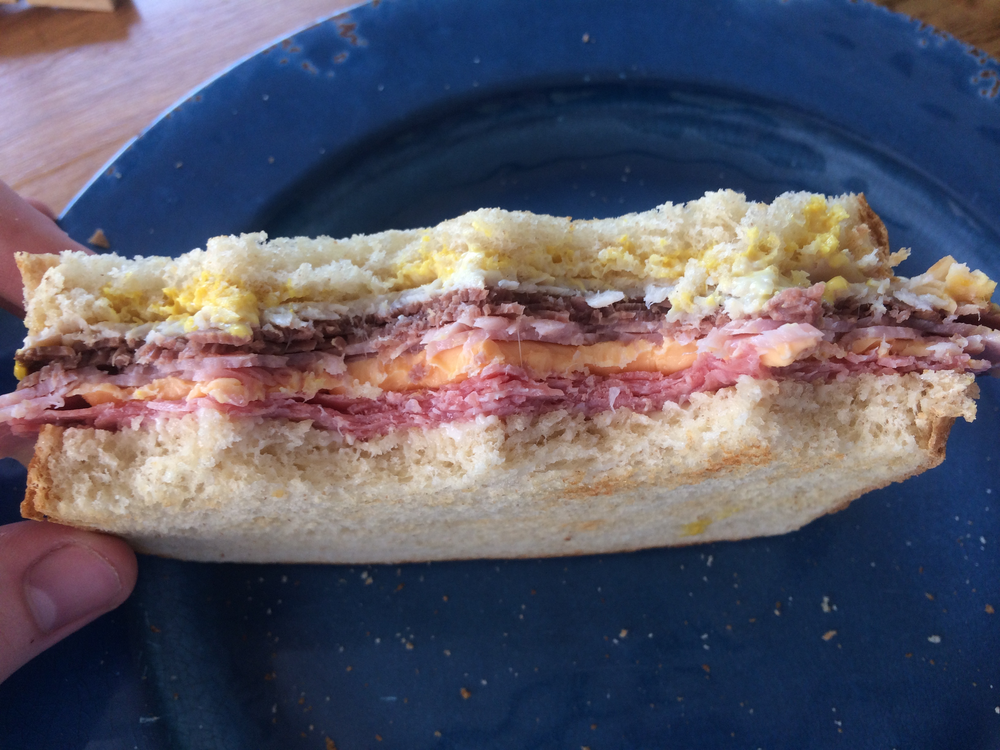

Arby's Website Example Sandwich Some Great Sandwiches
Mr. Arby
161 W Mineral Ave
Littleton, CO 80120
To whom it may concern,
All my life, I have been interested in a job cooking at Arby's. The idea of "eating fresh," and "lovin' it" have never quite satisfied my search for scrumptious food as much as "we have the meats!" You will find that I am mostly qualified for this job, as well, so I hope that you'll accept my labor with open arms.
I have managed to accumulate a GPA in high school (Arapahoe High School, in fact), above the certainly remarkable 4.0 mark, important to my work because I am absolutely aware that a cook at Arby's is a prestigious, intellectual career requiring experience with a rigorous, educated lifestyle. Don't worry, Arby's, I am prepared to handle this job!
Besides educational experience, I have a bit of cooking experience as well. My mother, a pretty good cook, and my father, a culinary instructor, have taught me a couple of useful things in the kitchen. Of that which they've taught me, I have successfully mastered:
My deference for sandwich making has inspired me my whole life to work for a revered sandwich-producing institute such as that which you direct. I have made many glorious sandwiches, all complete with enough meat to satisfy a few wolves.
An image of one of my meaty sandwiches is provided here:

Though I'm sure the application process to Arby's is competitive, I feel absolutely prepared for the job. I hope you'll consider my application seriously. I will make a great cook, I'm sure of it!
Sincerely,
Paris Floyd
123 Corndog Way
Java, ID 26009
123.456.7890